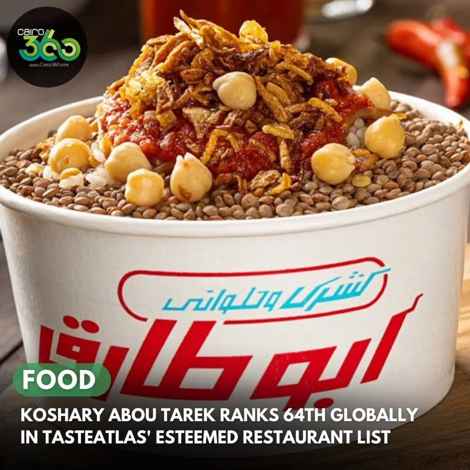
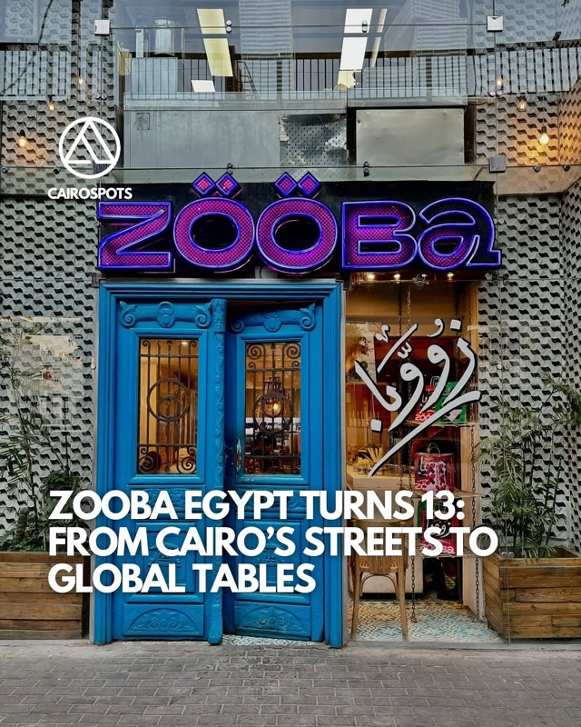
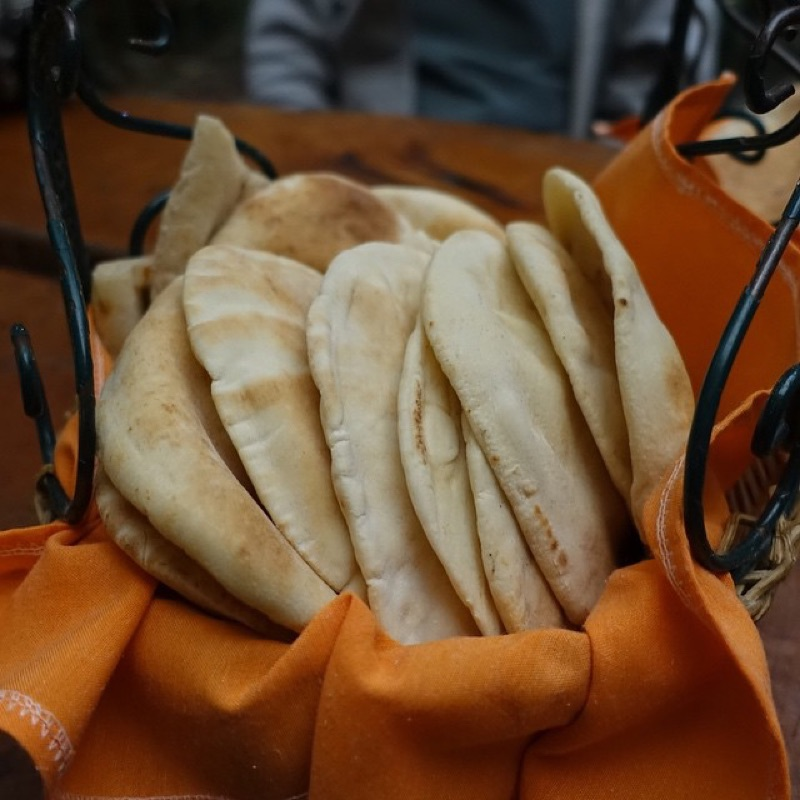
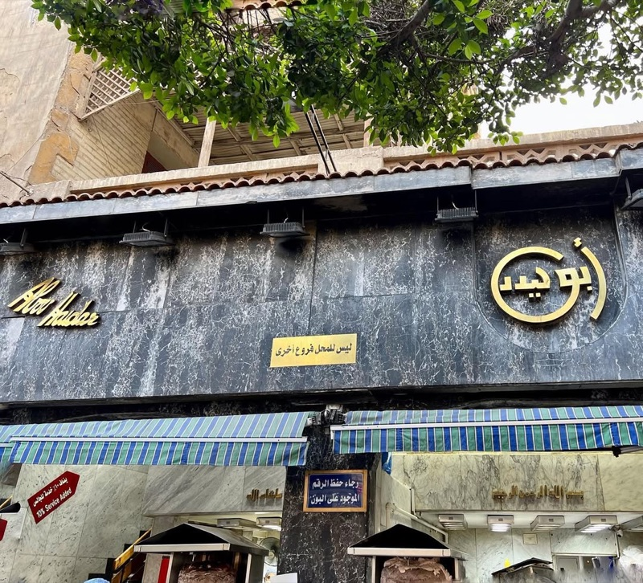
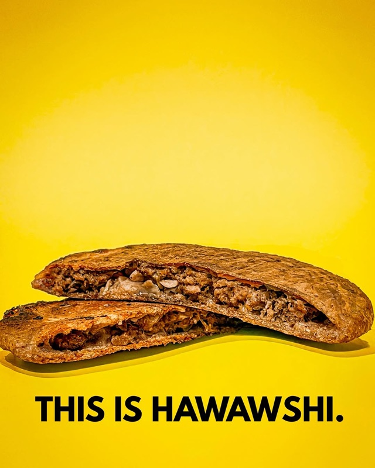
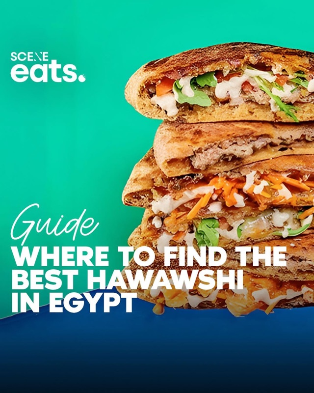
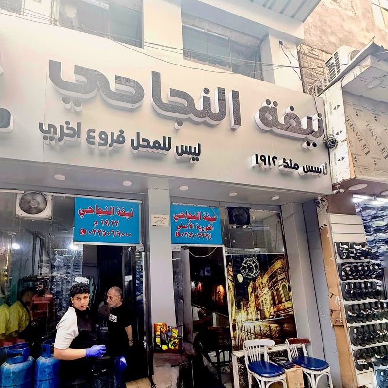
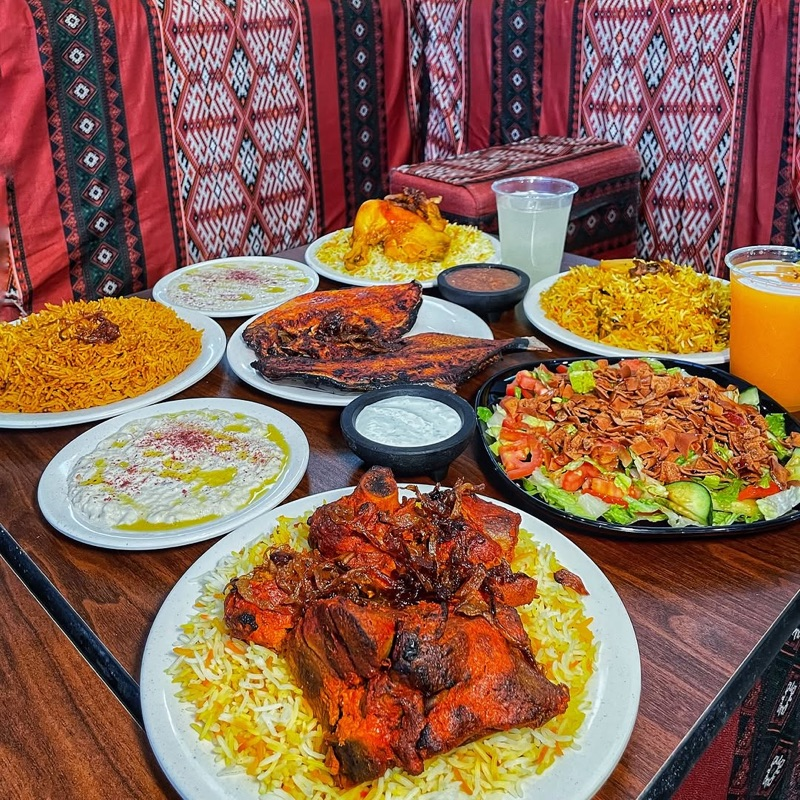
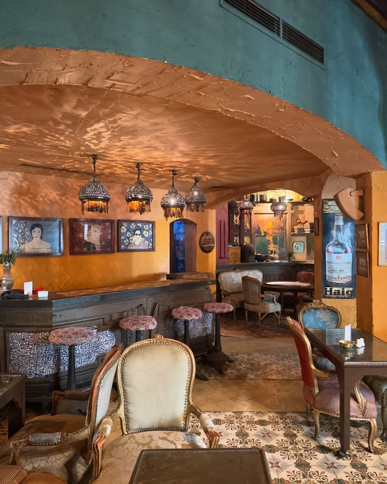

Cairo's street food scene is one of the world's most underrated — a chaotic, delicious symphony of koshari shops, ful carts at dawn, liver sandwich stands, and late-night shawarma joints. The city feeds 22 million people daily, and the best bites often cost less than a dollar.
We analyzed hundreds of Reddit posts from r/Egypt, r/travel, r/CAIRO, r/solotravel, and r/finedining to find the spots that actual Egyptians and experienced travelers recommend over and over. Skip the hotel buffet — these are the places worth your time.
📊 How we built this list
We analyzed 100+ Reddit posts and 800+ comments across r/Egypt, r/travel, r/CAIRO, r/solotravel, r/finedining, and r/EgyptTravelTips — spanning 2020 to 2026. Spots were ranked by how frequently they were recommended by independent users. Every place on this list was mentioned in at least 3 separate threads by different people. We weighted local Egyptians' picks more heavily than first-time tourist posts.

What to order: A large koshari (كشري كبير) — rice, pasta, lentils, chickpeas, crispy fried onions, and three sauces: tomato, shatta (spicy chili), and dakka (garlic vinegar). Customize heat to your preference.
"Literally went to Abou Tarek today for lunch and it was so 👏🏻 frickin' 👏🏻 delicious 👏🏻. First time eating koshari and I loved it! And you can make it as spicy or not as you want."
— r/Egypt · Mexican visitor thread, 2021
tabiji verdict: The undisputed king of koshari. A four-story building entirely dedicated to one dish. Yes, it's touristy — but it earned that reputation. The koshari is genuinely excellent and the theatrical assembly-line preparation is half the fun. Named among TasteAtlas's top 100 most legendary restaurants globally.
What to order: Large koshari with extra shatta if you can handle the heat. Their spicy sauce is significantly hotter than Abou Tarek's — approach with caution.
tabiji verdict: The locals' koshari champion. While tourists flock to Abou Tarek, many Egyptians prefer Tahrir for its bolder flavor and cheaper prices. The spicy sauce here is no joke — it's not for the faint of heart. Multiple branches across Cairo.

What to order: The ta'ameya (Egyptian falafel), ful medames, and hawawshi. Also try the feteer — they do both sweet and savory versions. Essentially a greatest-hits sampler of Egyptian street food in one clean, sit-down setting.
"For local Egyptian food, I highly recommend Zooba. It's a bit overpriced compared to most other places that do local Egyptian cuisine, but imo the quality of the food is just sooo much better."
— r/CAIRO · Best food? thread, 2023
tabiji verdict: The "elevated street food" option — clean, English menus, gorgeous presentation, and genuinely great food. Perfect for your first day in Cairo when you want to try everything without the overwhelming chaos. Yes, it's 3x the price of cart food, but it's still dirt cheap by Western standards.

What to order: Ta'ameya (falafel), molokhia, stuffed vine leaves, and grilled kofta. The takeaway counter next door has excellent quick sandwiches for a fraction of the sit-down price.
"Try Felfela for local food choices, either takeaway or sit in — both have different entrances."
— TripAdvisor Cairo Foodie thread · Cairo Foodie Itinerary
tabiji verdict: A Cairo institution since 1963 — the place your Egyptian friend's parents went on dates. It's tourist-friendly without being touristy. The sit-down restaurant is charming with its garden decor, and the takeaway window is a downtown lunch staple. A safe, delicious introduction to Egyptian cuisine.
What to order: Wara' lahma (beef-stuffed grape leaves), molokhia with rabbit, stuffed pigeon (hamam mahshi), and their legendary fatta. This is real Egyptian home cooking scaled up.
tabiji verdict: Deep in working-class Imbaba, this is where Cairenes go for the real deal. No English menu, no tourist handholding — just extraordinary food at incredible prices. The molokhia and stuffed pigeon here are worth the taxi ride alone. Go with a local if possible.
What to order: The mixed grill (mashweyyat), kofta, kebab, and ful medames. Started as a street cart and grew into a full restaurant — the food kept the street-food soul.
"Sobhy Kaber — similar to above but indoor seating. The man started out as a simple street vendor with minimal items on his menu, but due to the mouthwatering food he offers, his business grew."
— r/Egypt · Mexican visitor thread, 2021
tabiji verdict: The ultimate Egyptian rags-to-riches food story. From a humble street cart to one of Cairo's most beloved restaurants. The grills and ful are phenomenal, and the prices are shockingly reasonable for the quality. A favorite on Reddit's Egypt threads.

What to order: Chicken or beef shawarma sandwich with tahini, pickles, and garlic paste. Get a mixed plate if you can't decide. The garlic sauce is addictive.
"For Shawerma I encourage you to try Abou Haidar Shawerma in Heliopolis but that is also my bias because I grew up there. There are many great Shawerma places but I don't like the ones near tourist spots."
— u/Heliopolis1992, r/Egypt · Best Koshari/Food in Cairo? thread, 2024
tabiji verdict: A Heliopolis local's shawarma of choice — the kind of recommendation you only get from someone who grew up in the neighborhood. Worth the trip to Heliopolis, especially if you're visiting Baron Palace or the area's Art Deco architecture.

What to order: Classic hawawshi — spiced ground meat stuffed into baladi bread and baked in a wood-fired oven until crispy. Get it with extra onions and peppers.
tabiji verdict: Hawawshi is Egypt's answer to the empanada — spiced meat sealed in bread and baked until shattering crisp. El Rabeaa in Imbaba is the one locals fight over. If you're visiting El Prince nearby, walk 10 minutes and hit both.

What to order: Hawawshi gebna (with cheese) — the cheese variant is their signature. Also try the regular hawawshi and sogo' (sausage) sandwich.
"Hawawshi Al-Refaie — Locations throughout Cairo. Hawawshi is a fried meat patty sort of like an empanada. Oily, crispy, and delicious."
— r/finedining · Egypt Recommendations thread, 2023
tabiji verdict: The hawawshi chain with branches everywhere — easier to access than El Rabeaa but still excellent. The cheese hawawshi is an indulgent Cairo original. Multiple locations means you'll likely walk past one wherever you're staying.
What to order: Kebda Iskandrani (Alexandrian-style liver) sandwich — thinly sliced liver flash-fried with peppers and spices, stuffed into fresh baladi bread. Add sogo' (sausage) for the full experience.
tabiji verdict: Egyptians are obsessed with liver — and once you try a proper kebda Iskandrani sandwich, you'll understand why. Ezz El Monoufi in Dokki is a top pick for this Cairo staple. The liver is cooked fast and hot with peppers, and the sandwich costs less than a dollar. Life-changing.
What to order: Kofta, kebab, and stuffed pigeon (hamam mahshi). The grilled meats are the star — get a mixed plate to try everything. Don't miss the bread fresh from the oven.
tabiji verdict: The go-to for classic Egyptian grills — kebab and kofta done right. Their stuffed pigeon is a Cairo delicacy you won't find on most tourist itineraries. Pricier than street carts but still a bargain, and the quality justifies every pound.
What to order: Shorbet kaware3 (cow's trotters soup) — a rich, gelatinous broth that Egyptians swear is the ultimate comfort food. Also try the meshakel (mixed offal plate) if you're adventurous.
tabiji verdict: This is deep-cut Cairo food — not for the squeamish, but absolutely for the adventurous. Cow's trotter soup from Bab El Shaareyya is a Cairo institution. The neighborhood itself, in the heart of Islamic Cairo, is worth exploring. Late-night only — come after 10 PM for the full experience.
What to order: Ful medames, ta'ameya (falafel), fiteer (Egyptian layered pastry), and shawarma. It's a one-stop shop for all the Egyptian breakfast and street food classics.
tabiji verdict: GAD is Egypt's most ubiquitous food chain — the McDonald's of Egyptian street food, except the food is actually good. It's not the absolute best anything, but it's consistently decent across all categories and available on literally every block. Perfect for a quick, reliable meal when you don't want to hunt for a specific spot.

What to order: Neifa — a traditional Egyptian offal dish (stomach and intestines slow-cooked with spices). It's a deep-cut Egyptian street food that few tourists ever try. Served in sandwiches or plates.
tabiji verdict: Not for everyone, but if you want to eat like a real Cairene, this is the deepest cut on our list. The Al-Ghouriya location puts you in one of Islamic Cairo's most atmospheric medieval streets. An experience as much as a meal.
What to order: Large koshari — the cheapest quality koshari in downtown. Straightforward, no frills, just a solid bowl of Egypt's national dish at rock-bottom prices.
"Never tried abu tarek, I go to tom & basal coz it's near my place. Abu tarek seems a bit more expensive than tom & basal, I get a large for 30le."
— r/Egypt · $1 meal in Cairo thread, 2023
tabiji verdict: The budget koshari pick — cheaper than Abou Tarek with arguably equal quality. "Tom & Basal" means "Garlic & Onion" in Arabic, which tells you everything about their priorities. This is where locals grab koshari without the tourist markup.

What to order: Mandi rice with lamb — Yemeni-style slow-cooked rice infused with meat juices and smoky spices. Also excellent grilled meats (mashweyyat). Get the mixed platter for the table.
tabiji verdict: Not Egyptian street food per se, but Cairo's Yemeni food scene is incredible, and Hadramout Antar is where locals go for mandi. The smoky, fragrant rice with falling-apart lamb is comfort food that transcends borders. A bit out of the way but worth it for the flavors.

What to order: Molokhia with rabbit, ta'ameya, fattah, stuffed pigeon, and om Ali for dessert. The full Egyptian experience in an atmospheric setting with traditional decor, brass lanterns, and Arabic music.
"Abou El Sid offers traditional Egyptian recipes in a nostalgic setting — falafel and hearty dishes for decades."
— Multiple r/Egypt and r/travel threads
tabiji verdict: The fancy option on this list — but still authentic Egyptian food, not fusion or hotel food. Think of it as your "celebration dinner" spot in Cairo. The Zamalek location has incredible atmosphere, and the molokhia with rabbit is definitive. Pricey by Cairo standards, still a bargain globally.
What to order: Kebda gamali — camel liver, a unique Kerdasa specialty. Also try the regular kebda Iskandrani if you're not ready for camel. Served in sandwiches with spices and peppers.
tabiji verdict: The wildcard pick — camel liver in the village of Kerdasa, just a short drive from the Giza Pyramids. Combine with a pyramid visit for the ultimate Cairo day trip. If you've never tried camel, this is where to do it. A uniquely Egyptian experience you won't find in any guidebook.
Frequently Asked Questions
Is street food in Cairo safe to eat?
Generally yes, especially at busy, high-turnover spots where food is cooked fresh. Reddit travelers consistently recommend sticking to places where locals are queuing — that's your quality and safety indicator. Avoid raw salads and unpeeled fruit from street carts if you have a sensitive stomach. Established restaurants like Abou Tarek, Zooba, and Felfela are very safe bets. Bring antidiarrheal medication just in case, but most travelers have no issues.
What is koshari and why is it Egypt's national dish?
Koshari is a hearty mix of rice, pasta, lentils, and chickpeas topped with crispy fried onions and a spiced tomato sauce, served with shatta (spicy chili sauce) and dakka (garlic vinegar sauce). It's vegan, incredibly cheap (E£20–50 for a large portion), and available everywhere. It became Egypt's national dish because it's filling, affordable, and beloved across all social classes — from street workers to university students to businesspeople.
How much does street food cost in Cairo?
Cairo street food is extremely affordable. A large koshari is E£20–50 ($0.40–1 USD), a ful and ta'ameya sandwich is E£10–25, a kebda sandwich is E£15–30, and a hawawshi is E£25–50. You can eat very well for E£100–200 per day ($2–4 USD). Sit-down spots like Zooba and Abou El Sid are pricier at E£100–400 per person, but still a fraction of Western restaurant prices.
What are the must-try street foods in Cairo?
The essential Cairo street food checklist: (1) Koshari — the national dish, (2) Ful medames — stewed fava beans, the universal breakfast, (3) Ta'ameya — Egyptian falafel made with fava beans, not chickpeas, (4) Shawarma — Egyptian-style with tahini, (5) Hawawshi — spiced meat stuffed in bread and baked until crispy, (6) Kebda Iskandrani — Alexandrian-style liver sandwiches, (7) Fiteer — Egyptian layered pastry, and (8) Molokhia — jute leaf soup over rice.
Where is the best area for street food in Cairo?
Downtown Cairo (Wust El Balad) is the easiest — dense with koshari shops, ful carts, and shawarma stands. Islamic Cairo around Khan El Khalili and Al-Ghouriya has incredible food with historic atmosphere. Imbaba has legendary spots like El Prince and Hawawshi El Rabeaa. Zamalek has Zooba for a more curated experience. The rule: follow where the Egyptians queue, not where the hotel concierge sends you.
What time do Egyptians eat street food?
Egyptians eat late. Ful and ta'ameya carts open at dawn (6–10 AM) for breakfast. Lunch is typically 2–4 PM. Dinner can be as late as 10 PM–midnight. Many spots stay open until 2–3 AM, especially downtown. The best time to experience the buzzing street food scene is after 8 PM when Cairo truly comes alive. Koshari shops tend to peak at lunch, while kebda and shawarma are late-night favorites.